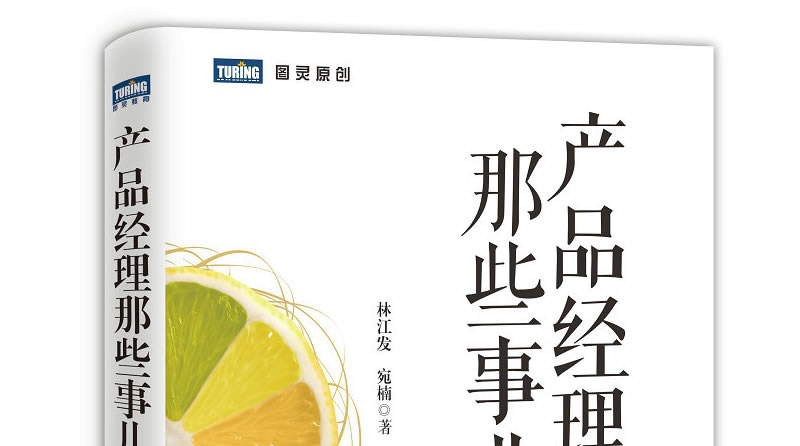
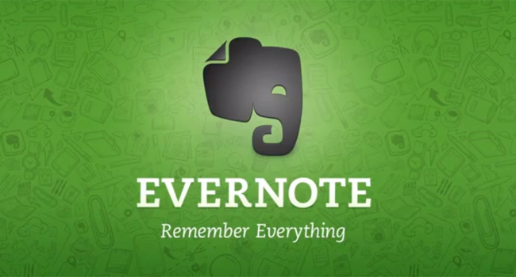

Product Management and PHP Development
首页 知乎 微博 关于 RSS
posted 2014-12-25
这本书让我想起多年前读过的《走出软件作坊》（作者@阿朱 ）。同为IT职场小说，写的都是软件开发。不同的是，《走》描写程序员转型项目管理，《产》描写程序员转型产品管理。这些年很多传统软件公司受到互联网发展的影响，开始从做项目走向做产品。《产》这本书迎合了这个趋势。

阅读全文
posted 2014-11-03
如果你是对的，而且在坚持，那么就是对用户最好的教育。
